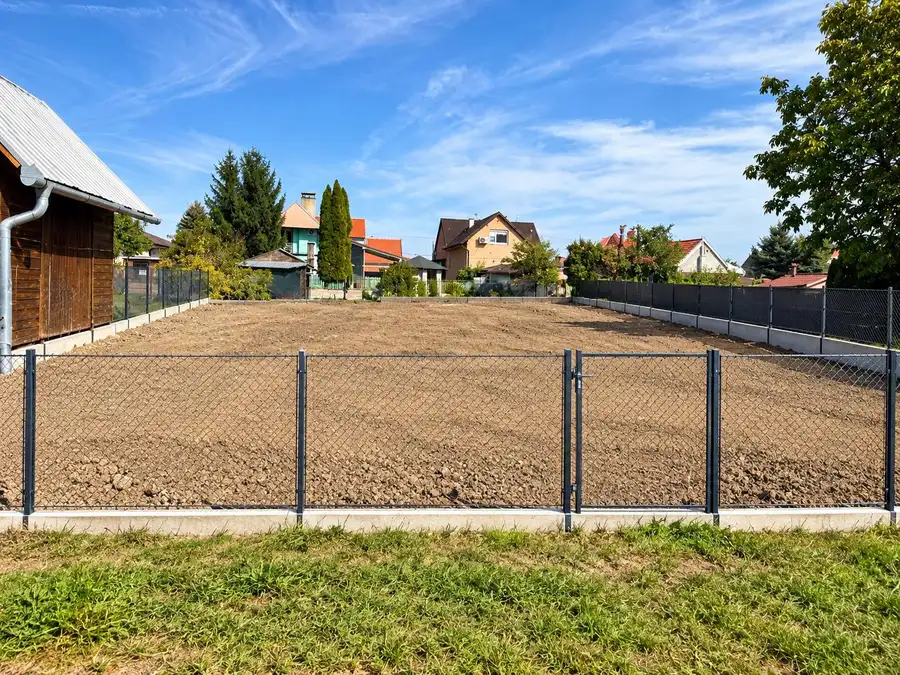
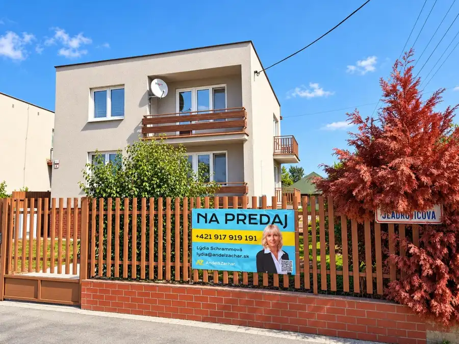
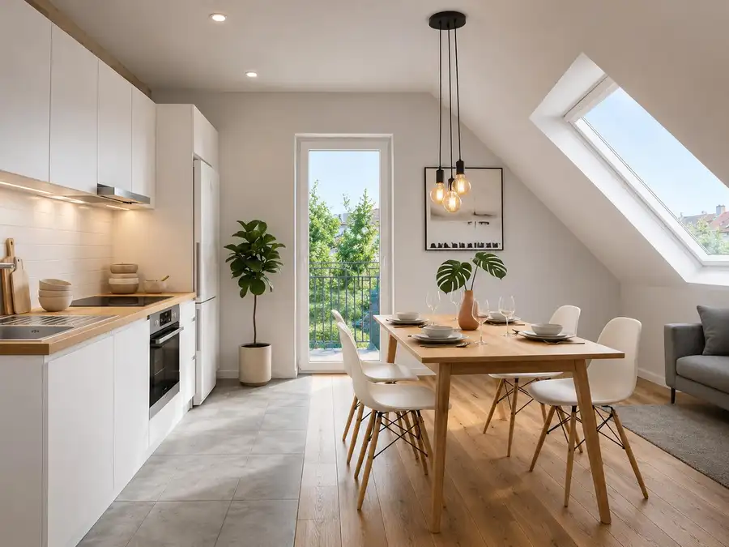
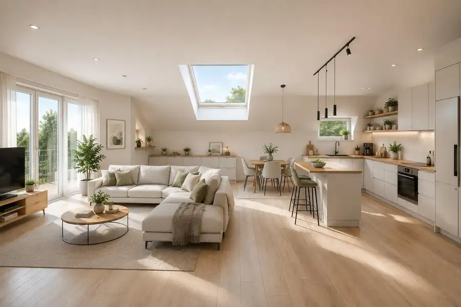
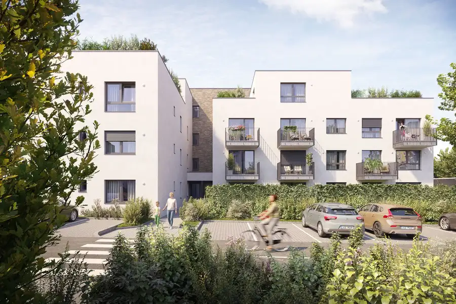
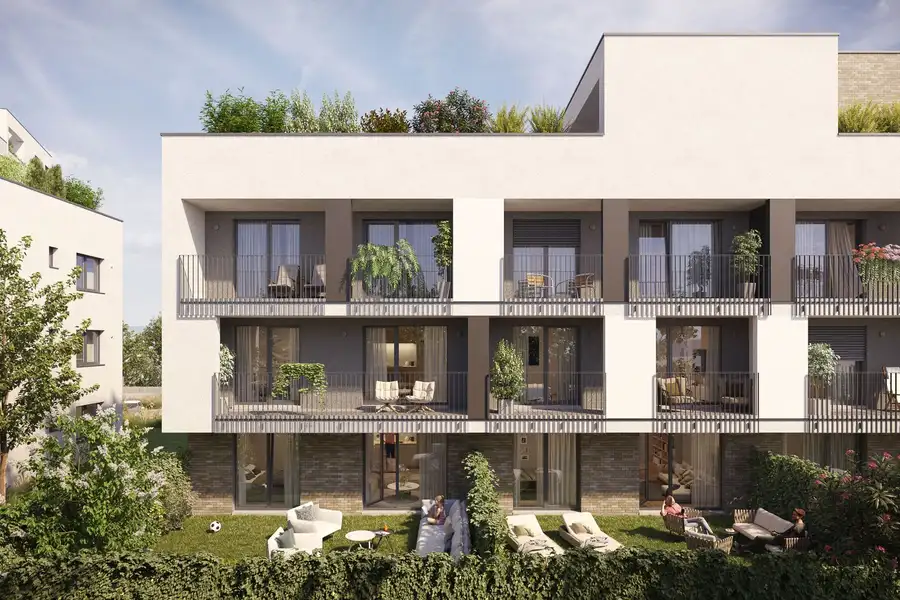
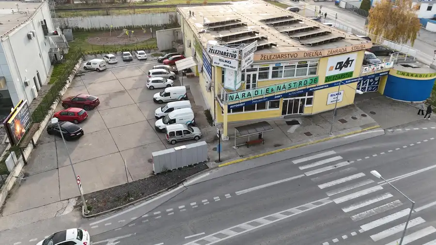
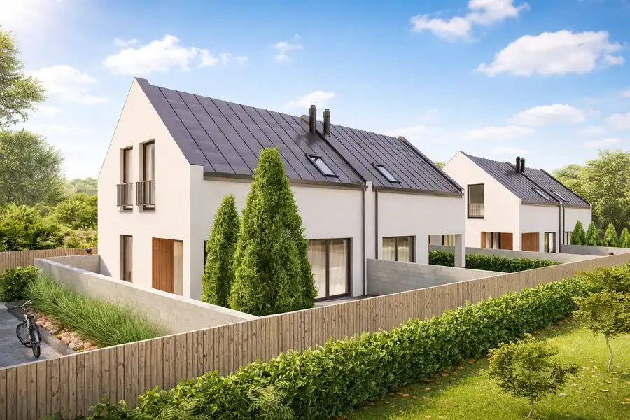

Aktuálna ponuka
Nehnuteľnosti, ktoré ponúkam
8 nehnuteľností na predaj a prenájom. Vyberte typ, alebo napíšte lokalitu.
8 z 8 ponúk

PozemokNové7 138 000 €Az. jedinečná príležitosť v novej ulici – stavebný pozemok 605 m² | Voderady Voderady 605 m² Ponúkame na predaj posledný dostupný stavebný pozemok v novootvorenej ulici v obci Voderady.Ak hľadáte miesto pre svoj budúci dom, kde získate pokoj,…
DomNové10 199 000 €AZ. PRIESTRANNÝ RODINNÝ DOM - 5 izieb, dvojgaráž, bazén a súkromná relax zóna Sereď 302 m² Priestor, súkromie a komfort na jednom mieste.Ponúkame na predaj priestranný poschodový rodinný dom na Sládkovičovej ulici v Seredi, ktorý ponúka…
Byt6 119 900 €AZ. Moderný 1-izbový podkrovný byt v novostavbe (39,2 m²) – Sereď, Parková ulica Sereď 1-izbový39 m²2. podlažie Hľadáte štýlové, efektívne a moderné bývanie alebo investičnú príležitosť v absolútnom centre mesta? Tento kompletne nový 1-izbový podkrovný byt v…
Byt6 144 900 €AZ. Moderný podkrovný 2-izb.byt v Novostavbe s vlastným parkovaním priamo v centre Serede Sereď 2-izbový52 m²2. podlažie Hľadáte štýlové a moderné bývanie alebo investičnú príležitosť, kde sa spája moderný dizajn s výbornou lokalitou? Tento kompletne nový 2-izbový…
Byt10 149 990 €AZ. Predaj 1i bytu v Developerskom projekte Podzáhradná Podunajské Biskupice, Bratislava 1-izbový33 m² Začnite vo vlastnom.Hľadáte svoje prvé bývanie alebo rozumnú investíciu?V projekte Podzáhradná nájdete moderné 1-izbové byty navrhnuté pre…
Byt10 183 990 €AZ. Predaj 2i bytu v Developerskom projekte Podzáhradná Podunajské Biskupice, Bratislava 2-izbový41 m² Priestor pre život vo dvojici.Moderné bývanie pre páry, mladé rodiny alebo ako investícia na prenájom.2-izbové byty v projekte Podzáhradná ponúkajú…
Komerčné priestory9 Cena dohodouAZ. Prenájom: Obchodno-skladový priestor s rampou a parkoviskom 1117m² + 811m² parkovacia plocha – Nitra, Štúrova ul. Nitra 1117 m² Hľadáte ideálne miesto pre svoje podnikanie s vynikajúcou viditeľnosťou a strategickou polohou v Nitre? Ponúkame na prenájom atraktívny priestor na…
DomNové10 229 900 €AZ. JURA PARK - NOVOSTAVBY 4-izb. rodinných domov s vlastným pozemkom a parkovacími miestami v Seredi Sereď 96 m² JURA PARK SEREĎNový domov. Viac súkromia. Len 4 rodinné domy.Hľadáte moderný rodinný dom, ktorý ponúkne pokoj, súkromie a zároveň výbornú…Tomuto výberu zatiaľ nezodpovedá žiadna ponuka. Napíšte mi, čo hľadáte.